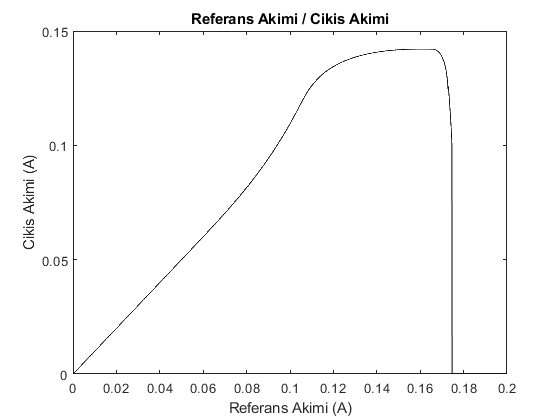
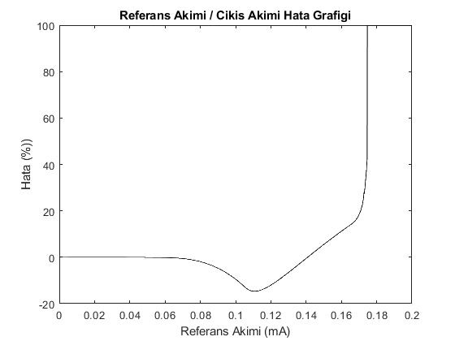
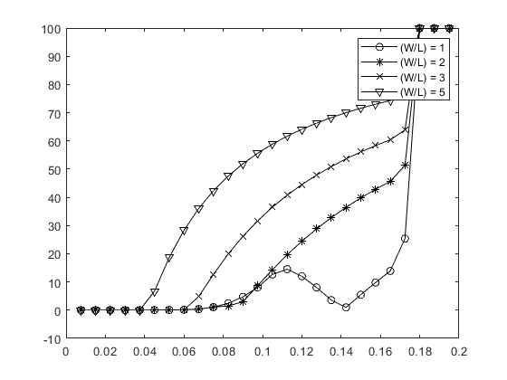
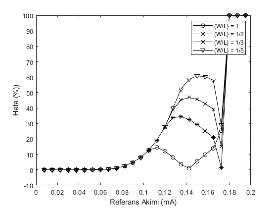
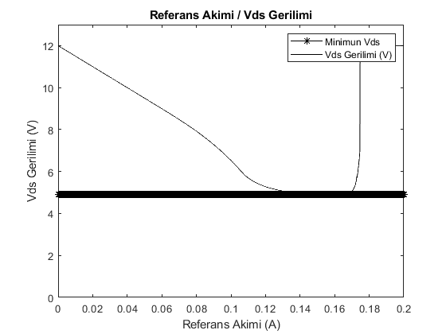

Contents
clc
clear
close all
Section 1.2
load('data2_1.txt');
data1 = data2_1';
d1_Iref = data2_1(:,2);
d1_Iout = data2_1(:,3);
figure();
plot(d1_Iref,d1_Iout,'k');
title("Referans Akimi / Cikis Akimi");
xlabel("Referans Akimi (A)");
ylabel("Cikis Akimi (A)");
figure();
d1_error = zeros(length(data1) , 1);
d1_error = (d1_Iref - d1_Iout)./d1_Iref *100;
plot(d1_Iref,d1_error,'-k');
title("Referans Akimi / Cikis Akimi Hata Grafigi");
xlabel("Referans Akimi (mA)");
ylabel("Hata (%))");
 
Section 1.2.1
load('data2_2_1.txt');
load('data2_2_2.txt');
load('data2_2_3.txt');
data2_1 = data2_2_1';
data2_2 = data2_2_2';
data2_3 = data2_2_3';
d2_Iout_2 = data2_2_1(:,3);
d2_Iout_3 = data2_2_2(:,3);
d2_Iout_4 = data2_2_3(:,3);
d2_error1 = abs(((d1_Iref*2) - d2_Iout_2)./(d1_Iref*2) * 100);
d2_error2 = abs(((d1_Iref*3) - d2_Iout_3)./(d1_Iref*3) * 100);
d2_error3 = abs(((d1_Iref*5) - d2_Iout_4)./(d1_Iref*5) * 100);
d1_Iref = d1_Iref(1:75:2001,1);
d1_error = d1_error(1:75:2001,1);
d2_error1 = d2_error1(1:75:2001,1);
d2_error2 = d2_error2(1:75:2001,1);
d2_error3 = d2_error3(1:75:2001,1);
figure();
plot(d1_Iref,abs(d1_error),'-ok'); hold on;
plot(d1_Iref,d2_error1, '-*k'); hold on;
plot(d1_Iref,d2_error2, '-xk'); hold on;
plot(d1_Iref,d2_error3, '-vk'); hold on;
legend("(W/L) = 1" , "(W/L) = 2" , "(W/L) = 3" , "(W/L) = 5");
axis([0 0.2 -10 100]);

Section 1.2.2
load('data2_2_4.txt');
load('data2_2_5.txt');
load('data2_2_6.txt');
data2_4 = data2_2_4';
data2_5 = data2_2_5';
data2_6 = data2_2_6';
d2_Iout_5 = data2_2_4(:,3);
d2_Iout_6 = data2_2_5(:,3);
d2_Iout_7 = data2_2_6(:,3);
d1_Iref_e = data2_2_4(:,2);
d2_error4 = abs(((d1_Iref_e/2) - d2_Iout_5)./(d1_Iref_e/2) * 100);
d2_error5 = abs(((d1_Iref_e/3) - d2_Iout_6)./(d1_Iref_e/3) * 100);
d2_error6 = abs(((d1_Iref_e/5) - d2_Iout_7)./(d1_Iref_e/5) * 100);
d2_error4 = d2_error4(1:75:2001,1);
d2_error5 = d2_error5(1:75:2001,1);
d2_error6 = d2_error6(1:75:2001,1);
figure();
plot(d1_Iref,abs(d1_error),'-ok'); hold on;
plot(d1_Iref,d2_error4, '-*k'); hold on;
plot(d1_Iref,d2_error5, '-xk'); hold on;
plot(d1_Iref,d2_error6, '-vk'); hold on;
legend("(W/L) = 1" , "(W/L) = 1/2" , "(W/L) = 1/3" , "(W/L) = 1/5");
xlabel("Referans Akimi (mA)");
ylabel("Hata (%))");
axis([0 0.2 -10 100]);

Section 1.3 - VDs/Iref
load('data2_2_7.txt');
data2_2_7 = data2_2_7';
vds = data2_2_7(2,:);
Iref_h = data2_2_7(1,:);
vds_min = min(vds);
vds_holder = zeros(1,2001);
vds_holder(1,:) = vds_min;
figure();
plot(Iref_h,vds_holder,'-*k'); hold on;
plot(Iref_h,vds,'-k');
title("Referans Akimi / Vds Gerilimi");
xlabel("Referans Akimi (A)");
ylabel("Vds Gerilimi (V)");
legend("Minimun Vds","Vds Gerilimi (V)");
axis([0 0.2 0 13]);
